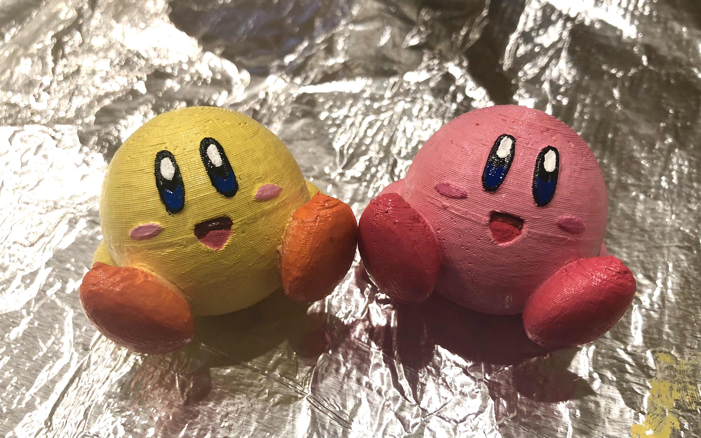
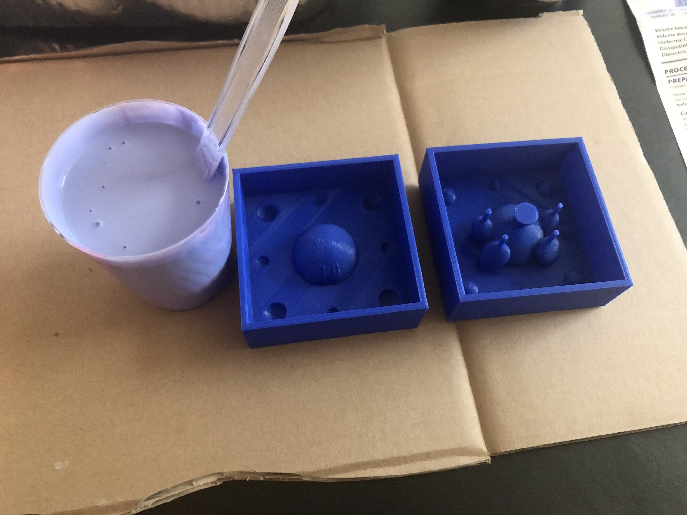
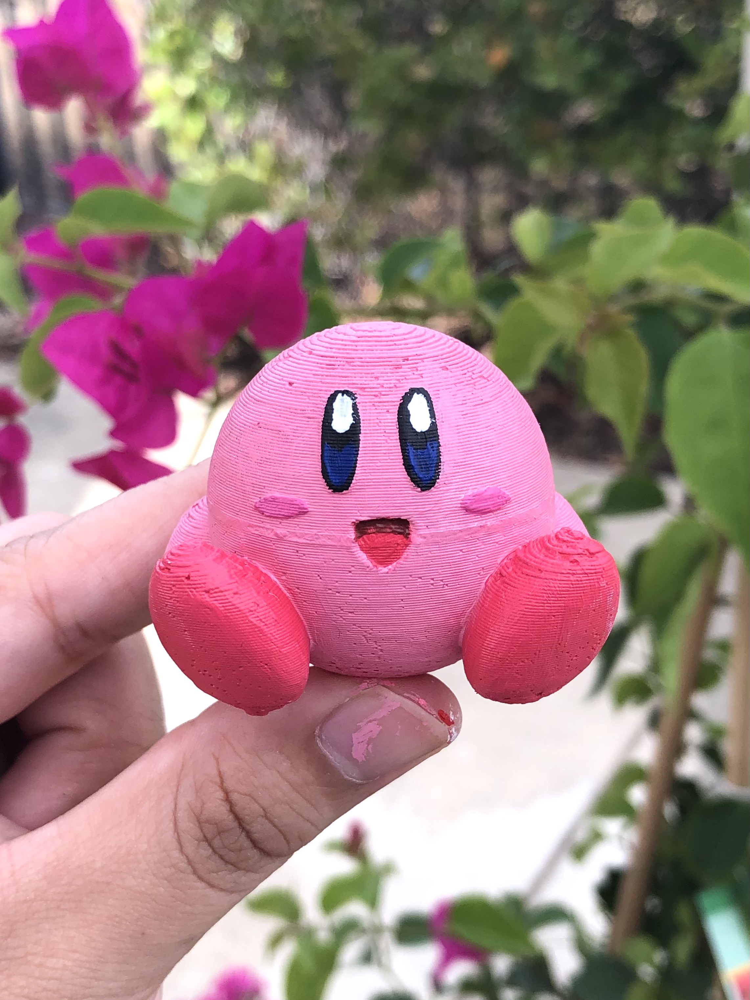
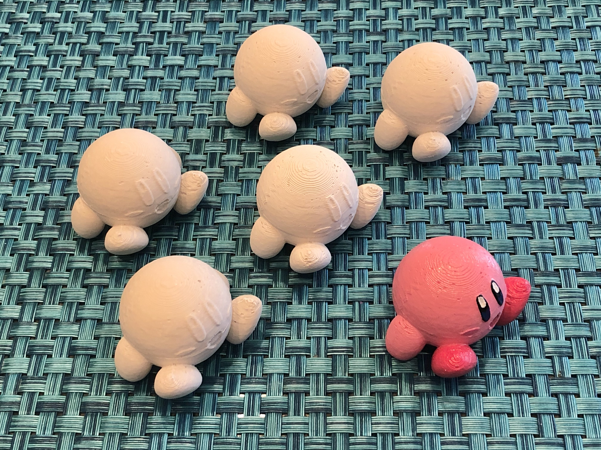

Molds and Casts Part 2!
The Goal
Fabricate a 2-part silicone mold and use the mold to cast 4 identical parts.
Last Week
Last week, I decided to make a 2-part silicone mold to produce Kirby (master part was found on Thingiverse ). Using Rhino (and with Junchao's help), I was able to model and 3D print the molds for my silicone molds. The files for the 3D printed molds can be found here.


Making the Silicone Molds
This week, I made the silicone molds! Before mixing the silicone, I needed to prepare my work station! I covered my work surface with a sheet of cardboard and gathered a disposable container (to catch any liquids), clear plastic cups, and a plastic knife to mix the silicone with. Using Smooth-On's Oomoo 30, I mixed equal parts A and B in clear plastic cups until the entire mix was one color. Once the silicone was well mixed, I poured the lavender-colored mix into the mold for kirby's top half. I then repeated this same process to fill the 3D printed mold for kirby's bottom half. After I poured each mold, I tapped the mold several times to try and get any air bubbles I could out. Once both molds were poured, I let the silicone cure overnight (cure for at least 6 hours).
Removing the Silicone Molds
The next morning, I woke up to my cured silicone molds! It was time to remove the silicone molds from the 3D printed mold. I began by taking a knife along the edges of the mold to detach it from the sides of the 3d print. I then tried to tap the silicone mold out by tapping the bottom, hoping that it would fall out. It didn't fall out...So I thought about other ways to remove it. I worried that prying the silicone mold out from the side would damage or rip the mold so I didn't want to do that. I remembered that last week Junchao had told me that I may need to destroy my mold to get the silicone mold out. So I took my two-part mold outside, grabbed a hammer, and went at it. I hammered the bottom and the sides of the 3D print, until I could rip apart the four walls surrounding the mold. Then I peeled the remaining piece from the bottom. That did it! My silicone mold was intact, and I repeated this process for the second half. I did the bottom half of Kirby next, and that silicone mold was a bit more difficult to remove. Kirby's feet were stuck so the silicone mold ripped a bit when I finally removed the 3D printed part. However, it was okay! The silicone bit didn't rip off, so it flexed back into its spot.
The 2-part silicone mold fits! The keys align and keep the 2 parts from shifting.
Casting
It's time to cast! To prepare my workstation, I laid down some sheets of foil. I used this plaster alternative. The mix was three parts cast material and one part water. I mixed this in plastic cups. It started curing pretty quickly so I had to pour the cast material into the mold right after mixing. My first cast was a bit difficult to fill, because it was hardening and blocking the pouring hole. I tapped the mold several times which allowed the casting material to fall into the mold. Luckily, I was able fill the entire mold. I waited a full 45 minutes for the cast to cure and then removed it from the mold! It turned out really well!
Kirby is so cute!! After the first cast, I learned that I needed to mix the cast material quickly, pour the material in while it's still liquid-y, and tap the mold to get air bubbles out (this lets the material fall further into the mold). I also recommend doing this process in a well ventilated area. I did the first cast in a bedroom with a fan turned on, but I don't think that was good enough and I got a headache. I repeated the process to make more casts, but did this in the kitchen with a window open.
Making My Kirby Army
I made a total of 6 Kirby casts. I decided to paint 2 of them! I'm very happy with my Kirby army. The Kirbys bring me great joy.
 Download the Rhino and STL files for the Kirby molds on GitHub: A5-Mold.